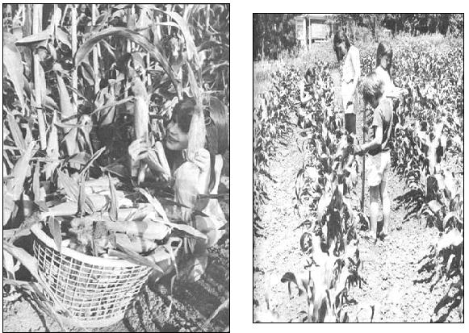
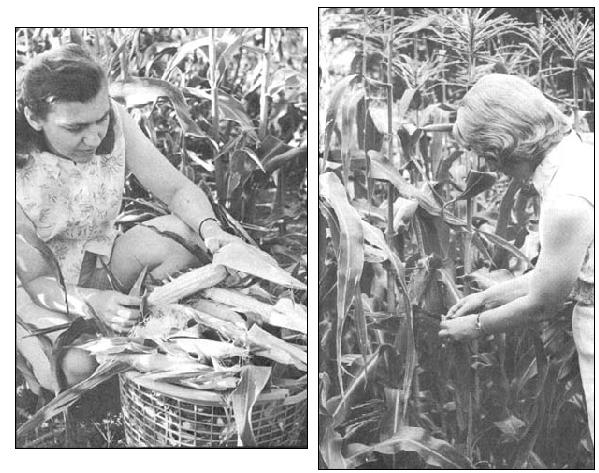

HOW TO GET
Priced close to 10 cents an ear as it is on supermarket counters, corn would seldom be enjoyed by my family of six hearty eaters if we didn't grow our own. Seventy-five cents invested once in a halfpound of good seed, however, produces all the top-quality roasting ears, creamed and kernel corn we can eat - fresh and frozen - all year round! Our methods should work for you too.
Don't wait until the weather turns hot to get your early corn into the ground. Hot weather is necessary for maturing corn, not for planting it. In fact, the corn I seed about two weeks before. The roots of such corn grow quickly and deeply into the water-softened earth and later provide plenty of moisture to developing ears, even during severe droughts.
The initial growth of cornstalks, I've found, is also facilitated by cool, sunny days . . . my early corn is the tallest, sturdiest and most productive. Best of all, there are far fewer damaging insects about during the first part of the season!
If you plan to sell part of your crop, my best advice again is "plant early". With premium ears ready for the Fourth of July holiday, you can just about name your price. Choose a corn that matures in 58 to 63 days. Any good hybrid will do but Hybrid Fourth of July and Hybrid Pride of Canada, when planted extra early, are two varieties exceptionally well-suited for cashing in on this market. Both may be purchased from Earl May Seed and Nursery Co., Shenandoah, Iowa 51601.
For early corn, it's best to till or plow the autumn before . . . so you'll be sure of getting into the field even during an exceptionally wet spring. Turn under a heavy sprinkling of wellrotted barnyard manure, rabbit droppings or similar organic fertilizer if you desire . . . but don't worry if it isn't available. Any plot of ground that will grow a good crop of weeds should grow corn without additional fertilizing.
It is important, however, to get as much organic material into the soil as possible. Plow under (or dig with a spade) dead leaves, green grass, straw, weeds, leftover food . . . anything that is growing or has grown. Decayed organic debris in the soil keeps it from packing and baking and permits roots to go deeper, faster. It also attracts helpful earthworms and encourages the presence of beneficial soil bacteria.
If you plant your corn early you'll probably not be bothered by damaging insects until the ears begin to mature. About that time, though, the corn ear worm and other chewing insects may start gnawing away on the developed kernels. Hidden beneath the husks, they can devour ears undetected.
Do not fight these pests with dangerous chemical insecticides! Instead, squirt small quantities of pure mineral oil (the kind you buy at the drugstore or supermarket) into the silks when they begin to show well on the ends of the ears of corn.
Yes, it works! I've used this safe, inexpensive method of control for five years. Since I began, my ears of corn are virtually free of insect damage - clean, whole, easy to work with - and command a far better price when I sell our surplus.
|
 LEFT: Planting early helps guarantee big, luscious roasting ears like these. I sow my seed corn nine inches apart and do no thinning . . . so no seeds, time or labor are wasted. I reduce seed rot when the soil is still cool and wet by planting shallow and covering the kernels with only about an inch of dirt. For midsummer plantings?when there's danger that the seed kernels will dry out in the hot soil?I cover the individual seeds with two inches of earth. RIGHT ABOVE: This corn was planted in rows spaced 30 inches apart for greatest yield from least ground and cultivation with a hand push-plow. If you plan to cultivate your corn with a small tractor or rototiller, you may have to space your rows 36 or 42 inches apart. Keep the soil around the growing corn worked up loose an inch or two deep. When the surface of the earth dries and cracks, moisture can disappear fast from around the roots of the plants and damaging insects can hide and multiply in the opened dirt. |
 LEFT: Ears of corn are completely untouched by insect pests when a little mineral oil is applied to their silks as soon as those silks begin to show well. This corn was planted early. Note the big, plump ears: those ears were supposed to grow seven inches long but many ran over eight. ABOVE: As soon as the silks on your ears of corn dry out, peel back the husks of a trial ear or two to test maturity. Better yet, pull an ear and take a bite. When kernels are bright yellow, sweet, milky and crisp your corn is at its peak condition and should be picked immediately. Remember that hybrid corn ripens all at once and ? when it's ready ? you must be prepared to harvest, freeze, can or sell your crop. A delay of only a day or two can produce tough, dry, starchy kernels. The corn shown above is lochief, which takes about 85 days to mature its big nine-inch ears. lochief is especially resistant to drought and is a good variety to plant in hot, dry climates. |
|